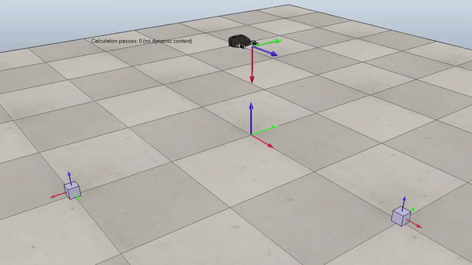

Robotic Manipuation Simulation
Created an autonomous pick and place simulation using Python and CoppeliaSim.
Code generates reference trajectory and uses PI controller to follow trajectory.

Overview
The purpose of this project was to demonstrate understanding of the math behind robotic manipulation. I wrote Python code that plans a trajectory, calculates odometry, and performs feedback control. The code outputs a csv file, that can be imported into CoppeliaSim to visualize results.
Reference Trajectory
The first step in this project was generating a reference trajectory. I coded a function, TrajectoryGenerator, that inputs the initial end-effector configuration, initial cube configuration, desired cube configuration, and number of configurations per second. The function outputs a matrix containing the end effector configuration at all time steps throughout the trajectory. 
Figure 1. Example of the generated reference trajectory. Gif plays at 3x speed.
Robot Kinematics
After generating a reference trajectory, I worked towards simulating the YouBot's kinematics. I wrote a function, NextState, that inputs the current robot configuration and joint speeds. The function uses first-order Euler integration to calculate wheel and joint angles at the next time step. I used odometry to calculate the chasis configuration based on the change in wheel angles over the time step. To do this, I started with the body twist of a four-mecanum-wheel robot. Using matrix exponentials I determined the transformation needed to give me the location and orientation of the chasis in the space frame. Combining these configuration variables gives the entire YouBot configuration at the next time step.
PI Controller
Now that I generated a reference trajectory and can simulate the robot's kinematics, the last step was implement a controler to make the robot follow the reference trajectory.
I coded a controller that used feedforward plus feedback control law:
$$V(t) = [Ad_{X^{-1}-X_d}]V_d(t)+K_pX_{err}+Ki\int_{0}^{t}X_{err}(t)\,dt$$
$$[V_d] = \frac{1}{Δt}log(X^{-1}X_d)$$
\(V\) is the calculated end-effector twist
\(V_d\) is the reference twist
\(X\) is the current end-effector configuration
\(X_d\) is the desired end-effector configuration
\(X_{err}\) is the error between the current end-effector configuration and the reference trajectory
\(K_p\) is the proportional gain
\(K_i\) is the integral gain
Once I caluclated the end-effector twist, I needed to convert this to commanded wheel and arm joint speeds \((u,\dot{θ})\).
To do so, I used the pseudoinverse of the jacobian matrix:
$$\begin{bmatrix} u \\ \dot{θ} \end{bmatrix} = {J^{\dagger}}_e(θ)V$$
The math to calculate the end effector twist is encapsulated in the,
FeedbackControl,
function, and the math to calculate the pseudoinverse of the jacobian is implemented in the,
Get_Jacobians, fucntion.
Results
Figure 2. Demonstration of a well tuned PI controller. Gif plays at 3x speed.

Figure 3. Demonstration of a poorly tuned PI controller. Overshoot causes robot to oscillate around reference trajectory at the beginning of the simulation. Gif plays at 3x speed.

Figure 4. Demonstration of code working with new pick and place locations. Gif plays at 3x speed.